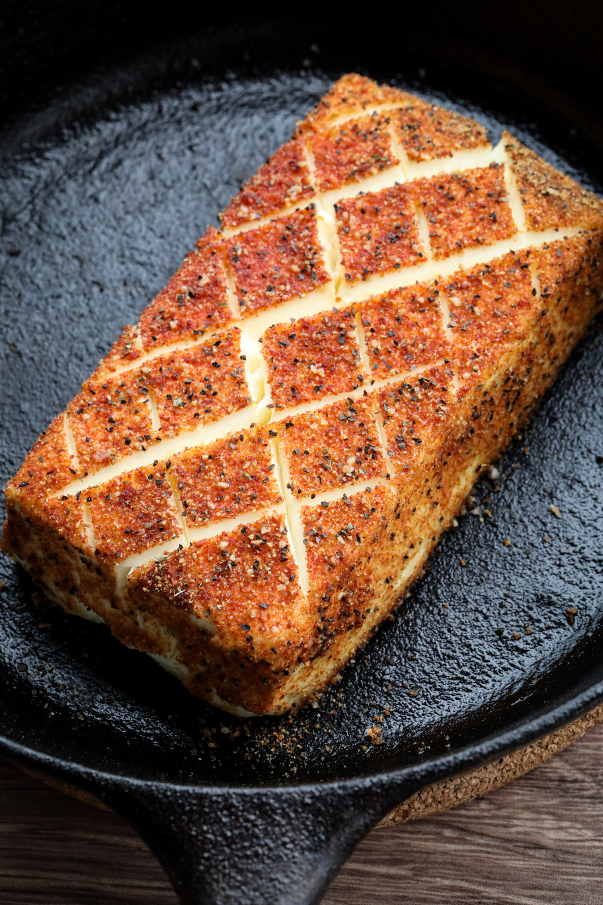

Smoked Cream Cheese
Looking for a delicious smoked appetizer? Here is the recipe to my crowd pleasing Smoked Cream Cheese!
Ingredients
- Block of Cream Cheese
- Favorite AP and BBQ seasoning
- Crackers, pretzels, or whatever you want to dip
Instructions
- Prepare smoker to 250°F - 275°F
- Add favorite wood, chips, or pellets. I use a blend of maple and cherry woods
- Take block of cream cheese out of the fridge. Score diagonally. Rotate one quarter and repeat
- Apply your favorite BBQ seasoning liberally. Cover all surfaces
- Place Cream Cheese in smoker for 2 - 2½ hours
- Remove Cream Cheese and serve with your favorite dippers
- You can even pre-smoke, place in fridge, and reheat in oven when you are ready